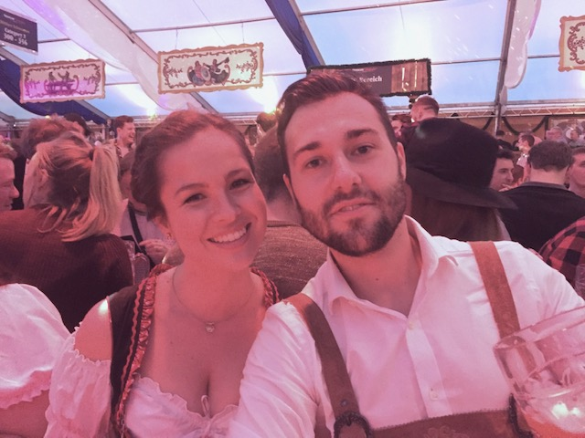

|  | |
I am a massive fan of travelling, I have travelled to over 30 countries so far! Checking out architecture, trying new foods, new beer and seeing beautiful vistas is what ist all about.Favourite country so far would have to be Gerany, I have travelled to 6 different cities and had a great time in each.
I am also a huge music lover, I have a fairly eclectic taste, but I would say funk is probably my favourite. My dad is a musician, so I have always respected original and live music. Check out William Perry's (aka Dad) music here:PerrySongs Music Publishing